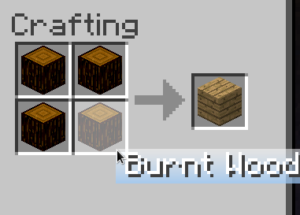
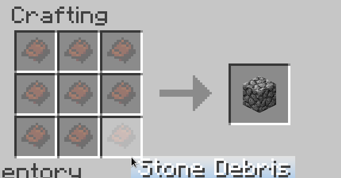
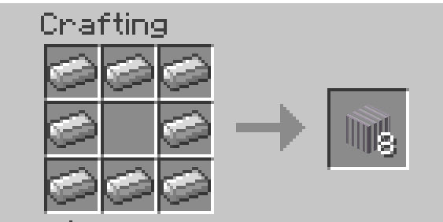
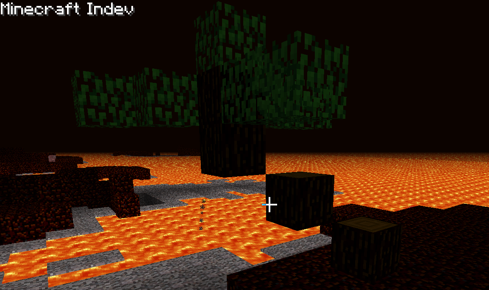
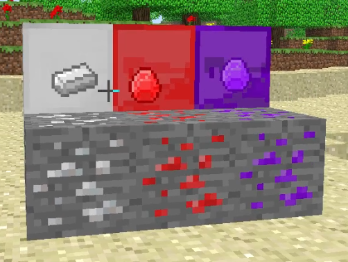
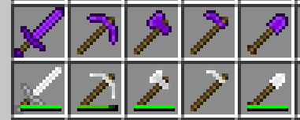

INDEVX
About
IndevX is a mod for Minecraft Indev 20100223, that focuses on adding nice improvements
and additions in the original style. It looks, and functions like a typical golden age mod, while still
retaining the vanilla æsthetic, which mods like Indev+, ReIndev etc lost - no blame of course, they are great.
Download
The recommended way to play IndevX is through the XUP (pronounced like "zap", stands for "indevX UPdater") launcher
designed specifically for this mod, that lets you automatically update the mod by simply checking a checkbox.

The launcher contains many options, splashes referencing topics from Star Wars, 1984, OSS and others.
Download the launcher:
jarfile
source code
NOTE: I condemn piracy! This launcher has no MS auth, because it's damn hard to implement, but I will do it some day.
please don't pirate
The XUP launcher on the Windows platform has a mouse pointer bug. If you use Windows, please use a regular launcher!
If you prefer to use it in a general-use launcher, like PolyMC, download the
jarfile and use it as the game jar.
Note that with this method you need to update it manually.
You need to add the -Djava.util.Arrays.useLegacyMergeSort=true Java argument, or the game will crash on generating levels!
Additions
- respawning, like in modern Minecraft
- wool dying
- sheep drop white wool instead of gray
- apples and golden apples
- Alpha-style level management
- ability to change level name and seed
- sapphire, which can be used to craft tools between iron and diamond
- ruby, which yet has no practical use
- catalyst crafted from rubbies that has no use yet
- gate blocks crafted from 8 iron ingots, function like doors
- ability to change account in-game
- sunlight blocks with max light level, crafted from 8 gold blocks and 1 torch
- gamerules
- changeable isometric screenshot hotkey
- quit button in the main menu
- structure generation API
- more tree types - small, medium, palms (last in hell only)
- food stacks up to 8
- item tooltips
- indev house removed
- BetaCraft proxy by default
- burnt wood that is the default in hell
- in hell scorched stone replaces dirt and stone
- scorched stone drops stone debris, which can be crafted into cobblestone
- silver
- clicking an armour piece with RMB will equip it, like in modern MC
- the "Realistic" world size, which is 1024x1024 blocks
- hoes break leaves faster
- creative mode, that can be selected during level creation
Fixes of vanilla bugs
- furnaces drop their contents
- tools affect blocks like furnaces or workbenches
- shovel affects field blocks
Crafting recipes
Survival in hell is hard, nobody should do it.

You'll cry

Gates are like doors, but better. And for that betterness you need to pay more.
Screenshots
A palm naturally generated in hell

All the new ores that the mod has to offer

All the new tools and weapons
Silver
Silver is the best ore in the mod. It is as rare, or sometimes even rarer than diamonds.
Silver is a fair metal, which means it cannot generate in hell.
Unlike gold. In Polish the word for "gold" is "złoto", and the word for "evil" is "zło".
Not accidentally there is a saying, that gold and evil have much in common.
Hence, gold is very common in hell. Enjoy, fans of greed (which is a sin!).
Btw, the palms in hell are actually a reference to the fact, that a youtuber named
BANCLAM
actually built palms in hell.
Bug reporting
Until I have a better way, you can report bugs here.
By reporting bugs you can get them fixed, so please do it.